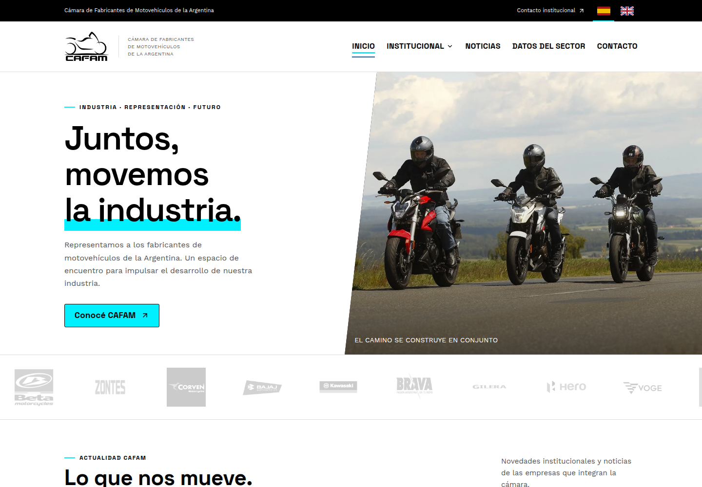
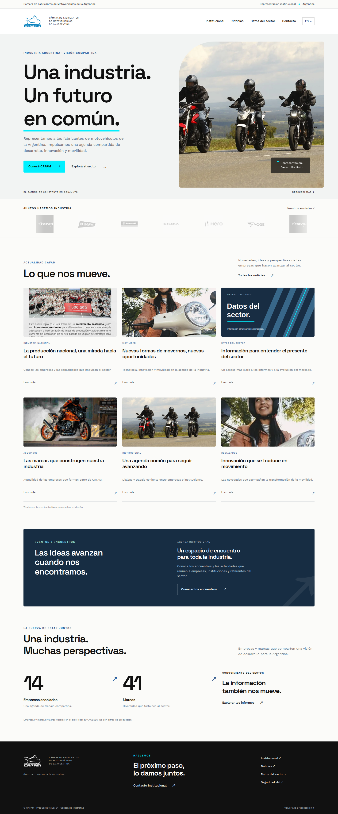
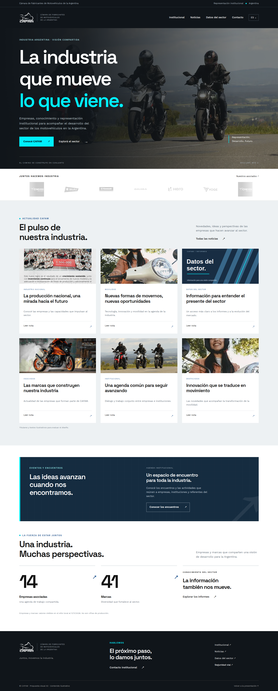
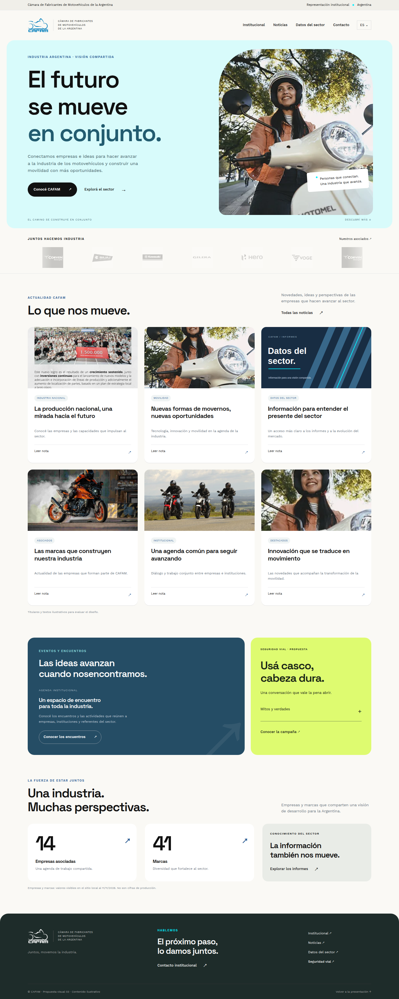
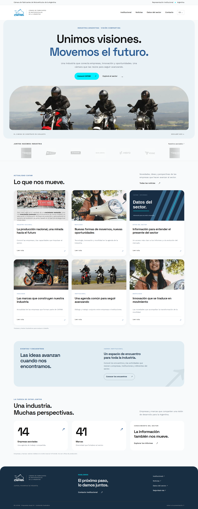
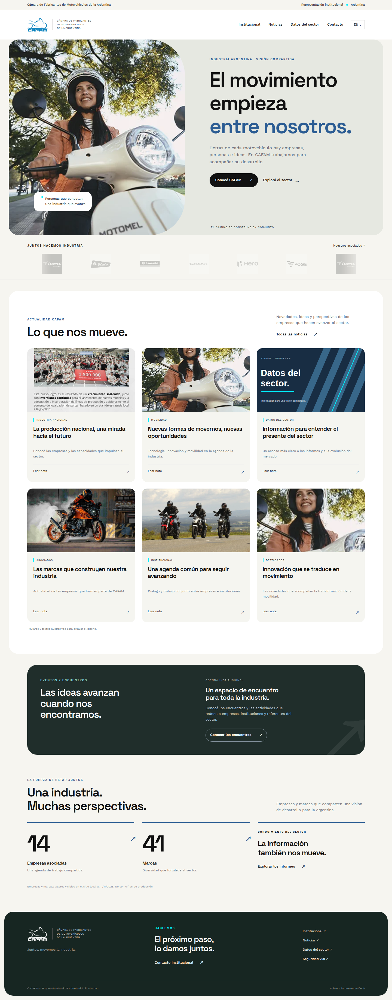
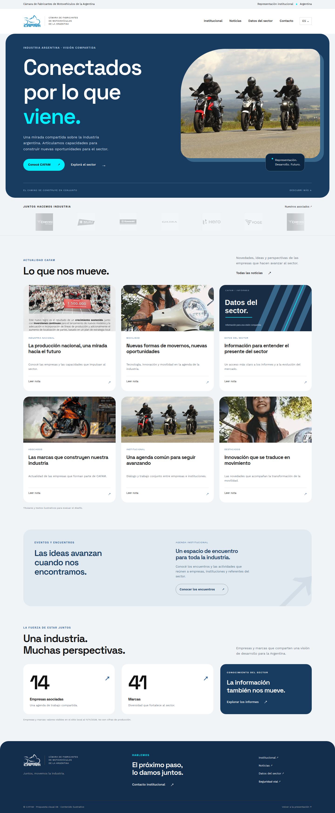
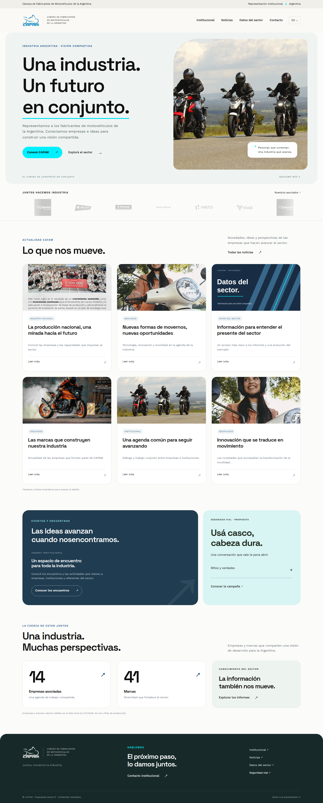

PreaprobadoPunto de partida · Diseño actualDiseño actual
Diseño actual
de CAFAM
La versión que venimos desarrollando, con sus vistas principales y navegación. Una referencia para comparar las siete alternativas.
Diseño actual y siete alternativas.
El diseño actual como referencia preaprobada y siete propuestas para una web institucional más moderna: con claridad para representar, información para decidir y una mirada más cercana sobre la movilidad.

PreaprobadoLa versión que venimos desarrollando, con sus vistas principales y navegación. Una referencia para comparar las siete alternativas.

01Una evolución cuidada del diseño actual. Blanco cálido, títulos con más jerarquía, fotografía editorial y cyan como acento. La alternativa más equilibrada para empresas, organismos y prensa.

02Una presencia más potente. Hero fotográfico oscuro, composición técnica y acceso claro a la información sectorial. Ideal si CAFAM quiere reforzar su perfil de industria y conocimiento.

03Una institución más próxima a las personas. Fotografía humana, curvas amplias y módulos amables. La campaña tiene un espacio propio y secundario, con una tarjeta interactiva de ejemplo.

04Una portada central, amplia y luminosa. La fotografía panorámica funciona como una ventana hacia la industria, con tarjetas y módulos de curvas generosas.

05Una propuesta editorial con la fotografía a la izquierda y el mensaje a la derecha. Tonos neutros, encuadres verticales y bloques redondeados.

06Azul profundo, fotografía enmarcada y superficies superpuestas. Una opción más institucional y envolvente, con cyan en detalles puntuales.

07La mezcla de la 01 y la 03: orden editorial, fondo claro, fotografía amplia y bordes redondeados. Campaña en un módulo secundario y sin verde lima.